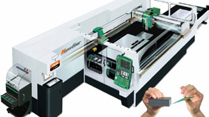

|
 Müþterilerimizin
iþlerinde önemli ve hissedilir baþarýlarý yakalamalarý için,
müþterilerimizin ihtiyaçlarýna uygun ve onlarýn ihtiyaçlarýný
tamamý ile karþýlayacak makineler geliþtirmek ve onlara sunmak,
Yamazaki Mazak'ýn temel hedefidir. Müþterilerimizin
iþlerinde önemli ve hissedilir baþarýlarý yakalamalarý için,
müþterilerimizin ihtiyaçlarýna uygun ve onlarýn ihtiyaçlarýný
tamamý ile karþýlayacak makineler geliþtirmek ve onlara sunmak,
Yamazaki Mazak'ýn temel hedefidir.
Hyper
Gear'ý geliþtirme projesine baþladýðýmýzda temel gayemiz;
boyalý çelik plakalar dahil, çok ince malzemelerden kalýn
malzemelere kadar geniþ bir yelpazede kesim yapabilmek, ayrýca;
karýþýk ve çok zaman alýcý ara iþlemler ile makineyi durdurmaksýzýn
sürekli kesimi mümkün kýlabilmekti. Müþterilerimiz tarafýndan
yoðun bir þekilde talep edilen, çok deðiþik malzeme cinsini
ve kalýnlýðý oldukça hassas bir þekilde kesebilen böylesi
bir makine, ulaþýlamaz bir verimlilik artýþý saðlayacaktý.
Diðer taraftan, farklý deðiþik makinelere de (Punç Pres gibi)
gerek kalmayacaðýndan, müþterilerimizin toplam yatýrým maliyeti
oldukça azalacaktý. Hedefimiz olan bu önemli tema ile Mazak,
eþi görülmemiþ deðiþik teknolojileri bünyesinde toplama kararlýlýðýný
sunmaktadýr.
"Mazak
Hyper Gear" geliþtirme takýmý, bu ulaþýlamaz teknolojileri
mümkün kýlabilmek için, yalnýz mühendilik becerilerini deðil,
müþterilerimizin de dahil olmak üzere, çok kapsamlý yeteneklerini
bir araya getirmek için mücadele etmektedirler. 30 dan fazla
patent'i uygulamamýz, kararlýlýðýmýzý ve azimli çabalarýmýzý
teyit etmektedir.
Ulaþýlamasý zor teknolojilerimiz üzerine olan geliþmelerimiz
þunlarý içermektedir;
1-)
Çok yüksek hýzlý operasyonda, yüksek hassasiyetli kesimi gerçekleþtirebilmek
için; önden okuma teorisine dayanan yenilikçi Mazak PreView
640 CNC Kontrol Ünitesi,
2-) Uzun ömürlü servis süresi ile çok yüksek hýzlý operasyonda,
yüksek hassasiyetli kesimi gerçekleþtirebilmek için, Mazak
Hibrit Lineer Motor sistemi,
3-) Çok deðiþik bir sensör ve dijital görüntü analiz teknolojisini
desteklemek için oldukça karmaþýk bir bilgisayar algoritmasý,
4-) Uzun bir makine servis ömrü ve uzun süreli otomatik operasyonlar
için teknolojiler,
5-) Çok deneyimli operatör gereksinimlerini azaltmak ve, yüksek
hassasiyetli kesimi ve verimliliði gerçekleþtirebilmek için,
tecrübesiz operatörlere kapsamlý destek veren teknolojiler,
6-) Makine, kritik duruma düþmeden önce öngörüler ve uyarýlar
verebilmektedir. Ayrýca, makinenin durmasýndan kaynaklanacak
onarým ve bakým masrafýný enaza indirmek için, düzetme talimatlarý
CNC ekranýnda gösterilmektedir.
7-) Müþterilerin daha yüksek lazer güç gereksinimleri gün
geçtikçe artmaktadýr. Bu yüksek laser gücünün, optimum operasyon
koþullarýnda sürekliliðini teminen, optik sisteme ve elektronik
bileþenlere özel temiz hava saðlanmaktadýr.
8-) Ýletiþim teknolojisi: Fabrikanýzda diðer departmanlar
ile, daha da ötesi diðer þirketler ile iletiþimi kurabilmek
için geliþtirilen ek fonksiyonlar.
a.)
CAD <-> CAM <-> CNC
b.) Makine durumunu uzaktan görüntüleme,
c.) Üretim planlamasý,
d.) Öngörü ve Uyarý mesajlarý gönderme.
YENÝ MAZAK HYPER GEAR HAKKINDA BÝLMEK ÝSTEDÝKLERÝNÝZ:
Eþsiz
makine zekasý ve devrim niteliðindeki makine performansý ile;
çok yüksek hassasiyetler, en yüksek kesim hýzlarýnda sizlere
sunulmaktadýr.
- Yüksek
verimlilik ve kalitenin temini için saðlanan otomatik sistemler,
tecrübesiz bir operatör'ün bile kullanýmýna destek vermektedir.
- Boyalý
galvaniz sac plakalar dahil, çok ince malzemelerden, kalýn
malzemelere kadar tüm ürünler tek bir makine ile ve en yüksek
hýzlarda kesilebilmektedir.
- Makine
otomatik olarak tahminlerde bulunmakta, uyarýlar vermekte
ve talimatlarý yeniden yüklemektedir.
Alýnmýþ
olan yepyeni patent'ler ;
1-
Akýllý Kafa Deðiþtirici
2- Akýllý Nozzle Deðiþtirici
3- Allý Nozzle Denetimi
4- Akýllý Delik Açma Önceliði (Delik açma tabancasý)
5- Akýllý Kesim Hatalarýný Önleme Sistemi (Cürufsuz)
6- Akýllý Otomatik Ayna ve Lens Kirlenmeleri Tespiti
7- Akýllý Kesim Hatasý Tahmin-Uyarý-Yeniden Talimat Yükleme
8- Akýllý Optimum Iþýn Çapý Seçimi (U-Eksen dengelemesi)
9- Akýllý Sabit Iþýn Uzunluðu Yolu Sistemi
10- Akýllý Odak Noktasý Ölçüm ve Ayarlama
11- Akýllý Sýçrayan Kývýlcým Kaldýrma Sistemi (Paslanmaz,
Alüminyum v.s'lerin Delik Açmalarýnda)
12- Akýllý Nozzle Taþlama Sistemi
13- Akýllý Nozzle Ön-Yerleþtirme Ayarlama Sistemi
14- Akýllý Yeni Nesil Lineer Motorlar (X1, X2, Y, Z ve U Eksenleri)
15- Akýllý Lineer Motor Kontrol
16- Akýllý Lineer Motor Senkronize Kontrol
17- Akýllý Lineer Motor Toz Geçirmeme Sistemi
18- Akýllý Lineer Motor Hibrit Mýknatýs Düzeneði
19- Akýllý lineer Motor Hava Temizleme Sistemi
20- Akýllý PreView 640 CNC Kontrol Ünitesi
Ek Açýklamalar:
*
5 Eksenli Tam Hibrit Lineer Motorlar (X1, X2, Y, Z ve U Eksenleri)
*
Yüksek verimlilik ve kalitenin temini için saðlanan otomatik
sistemler sayesinde tecrübesiz bir operatör bile, boyalý galvaniz
sac plakalar dahil, çok ince malzemelerden, kalýn malzemelere
kadar tüm parçalarý optimum kesim koþullarýnda kesebilmektedir.
CNC Kontrol Ünitesi:
Lazer
Ýþleme Merkezlerinde Türünün Dünyadaki Ýlk CNC Kontrol Ünitesi
Ultra Yüksek Hýz Kontrol Sistemi Haraketleri Önceden Okur.
Bilinen-Alýþýlmýþ
temel kontrol sistemi "Arkadan Beslemeli" (Feed-back)
sistemdir. Bu sistemlerde hýzý artýrdýkça, hassasiyet azalýr.
Arkadan beslemeli sistemlerde karþýlaþýlan genel sorunlar;
hassas kesilemeyen yuvarlar dönüþler, sýcaktan dolayý eriyen
keskin köþeler, yanan boyalý galvaniz saclar v.s. dir. Bu
tür problemleri çözebilecek, devrim yapan kontrol teorisi
araþtýrýlmakta idi.
Yeni,
önden okuma teorisine dayanan software teknolojisini, Lazer
Kesim Tezgahlarýnda Yamazaki Mazak bulmuþtur. Bu teoriyi kullanarak,
Laser kesim tarihinde türün ilk Preview 640 CNC Kontrol ünitesini
baþarý ile geliþtirmiþtir.
Bir
sonraki kesim noktasýna gitmek için en uygun hýzý ve çýkýþ
gücünü tahmin ederek; her kesim noktasýndaki kesim hýzý ve
ivmesi, programlanmýþ döngüden otomatik hesaplanmaktadýr.
Bu yeni jenerasyon CNC sistemi çok yüksek hýzlarda, çok yüksek
hassasiyetli kesimleri olanaklý kýlmaktadýr.
Hyper
Gear'ýn bazý yenilikçi fonksiyonlar;
1.
Kesim hatasý önleme
2. Kesim hatasý tahmini
3. Kesim hatasý düzeltme-onarým
Bu
fonksiyonlar sayesinde; kesim hatasý, gerçekte oluþmadan önce
önlenmekte ve bu sayede çok daha uzun süreler el deðmeksizin
operasyon mümkün olabilmektedir.
Makine alarm durumuna girse bile, makinenin ölü zamanýndan
kaynaklanacak düþük verimliliði önlemek içinde çok az bir
yeniden onarma zamaný gereklidir.
TEKNÝK ÖZELLÝKLER:
Patentli
olan "Akýllý En Uygun Iþýn Çapý Seçim Sistemi (U Ekseni
Dengeli)" sayesinde; yüksek kaliteli kesim, makinenin
çok uzun süreli çalýþmasýnda bile gerçekleþtirilmektedir:
- Iþýn
Modu: TEM 01
- Maksimum
Yükleme Kap.: 930 kg.
- Eksen
Hareketleri:
- X-Ekseni
3070 mm
- Y-Ekseni
1545 mm
- Z-Ekseni
100mm
- Ývmelenme
(X,Y,Z): 3G
- Pozisyonlama
Hassasiyeti: +/- 0.01 / 500 mm
- Tekrarlama
Hassasiyeti: +/- 0.005 mm
- Palet
Deðiþtirici: 2 adet
- Lazer
Rezenatör: 4000W - 2500W
- Toplam
Elektrik Güç Gereksinimi (Rezenatör, Soðutucu-Kurutucu Ünite
ve Toz Toplama Ünitesi Dahil): 102.8kVA (4.0kW için), 79.0
kVA (2.5kW için)
- Yüksek
Hassasiyetli Kesim Kapasitesi:
- Yumuþak
Çelik 25mm
- Paslanmaz
15mm
- Alüminyum
12mm
- Makine
Aðýrlýðý: 14800kg
- Makine
Ölçüleri: (10600 x 3370 x 1850 mm)
Ýrtibat:
Murat BARAN
Mazak Lazer Tezgahlar Satýþ ve Pazarlama Müdürü
E-Posta: mbaran@formcnc.com.tr
Mazak - FORM Makina CNC Takým Tezgahlarý San. ve Tic. A.Þ.
Kýsýklý Cad. Haluk Türksoy Sok. No:1 Baðlarbaþý - Üsküdar
- Ýstanbul
Tel : (216) 474 45 70
Faks : (216) 474 28 70
Web: www.formcnc.com.tr
|